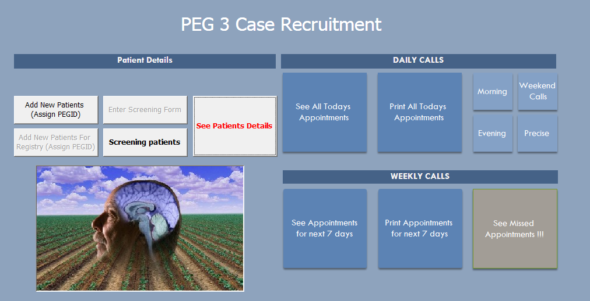
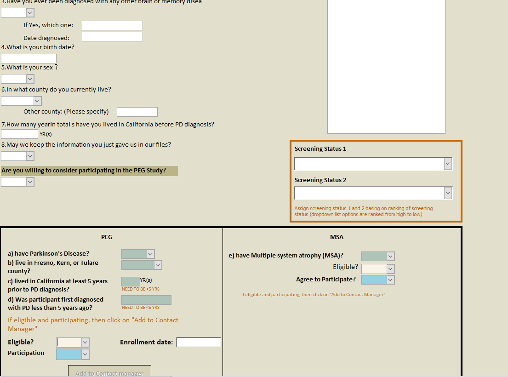
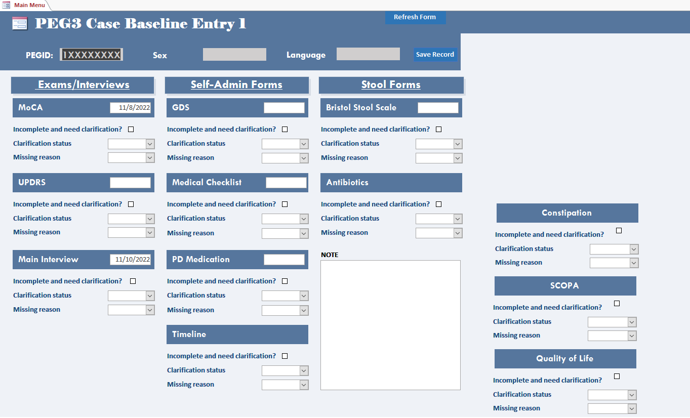

PEG data entry training
Introduction
In PEG study, we are using Microsoft Access to manage our data. All the data are stored in the Network Attached Storage (NAS) server in the PEG office. Since the data are sensitive (i.e., contain PHI information), we can only access to the database through the offline computers and it is important to follow the data security protocol when entering data. This training session will guide you through the data entry process.
Part 1: Database structure
In PEG study, we have separated the databases for Cases (PD patients), Household controls, and Population controls. Each database contains two parts: the contact manager and the entry database.
Where to find the databases
Log in to the offline computer with the shared username and password (I will share with you in person or you can consult with a RA in the office).
Go to
peg-boss\PEG Collection and Contact Databases\PEG Databases ACTIVE\PEG3and find the corresponding database file end with.accdb. Note that there is a password for each of the database file as well (I will also share with you in person or you can consult with a RA in the office). If you are interested, here is a tree structure of the database folder.
Part 2: Contact manager
Contact manager is a database that stores the contact information of our participants. It is used to track the recruitment process, screen participant’s eligibility and follow-up with the participants.
For example, if we received a reply card from a potential patient who indicated interest in participating our study, we need to 1) screen the participant to see if he/she/they are eligible for our study; 2) if eligible, add this potential participant to the contact manager database. In this case, we need to work on the Case_recruitment_contact_manager.accdb file.
Here is the dashboard view for it: 
Step 1: Eligibility screening
- Click on
Screening patientsbutton to open the screening form. And you will see something like this:
On the left side, you will see the information from PD registry if the participant is from the registry. Otherwise, it will be blank. On the right side, you will need to input the information you collected from recruitment process (e.g., reply card, phone call, etc.). Sometimes, the information from the registry is not accurate or outdated, so you need to verify the information with the participant.
- Switch to the “Screening” tab and input the information you collected in the screening process.  Based on the information, please determine if the participant is eligible for our study and input the corresponding screening status in the “Screening status 1” field.
Step 2: Assign PEGID
If the participant is eligible, you need to assign a PEGID to the participant. The PEGID is a unique identifier for each participant in our study. For every reply card that we mailed to the participant, a MailID is pre-assigned. A PEGID is the combination of MailID + Participant's Initial + last two digits of birth year. You can assign the PEGID by clicking the Add New Patients button, search for the corresponding MailID and put the new PEGID in the field in front of that MailID.
Step 3: Add to contact manager
The Add to Contact manager button is greyed out by default. If you would like to add this participant in our database if eligible and willing to participate, please make sure to check Are you willing to consider participating in the PEG Study. Once the participant is added to the contact manager, the PEG3 Contact Manager form will pop out and the basic information will be automatically filled in the contact manager form. You can also go back to the dashboard and click the “See Patient Details” button to open the contact manager form. You will see something like this:  and you can input the information you collected from the participant in the corresponding fields.
and you can input the information you collected from the participant in the corresponding fields.
Part 3: Entry databases
The entry databases are used to store the data that we collected from the participants during the interview. The data are organized in a structured way so that we can easily access and analyze them. In PEG study, we have entry 1 and entry 2 for Cases, Household controls and Population controls, respectively. Each database contains the forms for different sections of the interview.
For example, we are going to enter data for a PD patient who has completed the interview. In this case, we need to work on the PEG 3 Entry Database_Case.accdb file.
Step 1: Data entry
The main switch board looks like this: . Put your cursor in the
PEGIDfield, pressctrl + Fto search for the participant ID that you are going to enter data for. Then, navigate to the corresponding form by clicking the button on the switch board. The format and layout of each form in the database should be consistent with the paper/eletronic version that we use in the interview. If you notice any discrepancy, please report to the data manager.Make sure to put your initials and date of entry in the corresponding fields in the form so that we can track the data entry process.
If you cannot find the participant ID in the database, please close it and open it again to make sure that you are using the most updated version of the database. If you still cannot find the participant ID, please report to the data manager.
Step 2: Save and exit
After you finish entering data for a participant, press ctrl + S to save the data or right click the form and select “Save record”. Note that sometimes you might encounter a pop-up window saying that you cannot save the record at this time. This is because someone else is editing the same database. In this case, please wait for a few minutes or negotiate with the other person to see if he/she can close the database for a while so that you can save the record.